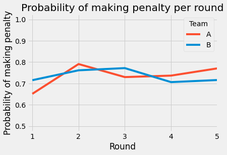

Can a Team Increase Their Odds of Winning "the lottery"?
By Gonzalo Pato | March 28, 2022

1 in 292.2 million. Or 0.0000003%. That amount is the odds that a lottery ticket of Powerball is the winning ticket1. The odds of getting killed by a cow is 1 in 300,0002 (which is even higher than that of getting killed by a shark). But is there any way of influencing these probabilities? Well, if you know that a cow can get you killed, it is better not to get close to one. Or you can buy 2 tickets of lottery to double your chances (to 0.0000006%, so think about the tradeoffs).
If we mention “the lottery” in soccer, most people will think of the same: penalty shootouts. That time when advancing on the tournament (or even taking the cup home) is on the line. Having already played for 120 minutes and everything tied up, the only way (and for people with heart problems usually the least recommended) to end a soccer game is a penalty shootout. Usually, it is said that penalty shootouts are a lottery… Or is there anything within a team’s reach to increase the chances to win this “lottery”?
Order of teams
After Spain’s loss in the 2020 Euros against Italy Gerard Piqué, former Spanish National Team player, tweeted: “It is not chance that the four penalty shootouts that have been in the @Euro2020 and the @CopaAmerica have been won by the team that shoots first. Statistics say that the first [team] has more chances and in a tournament like this I don’t think it is fair that a draw makes you start with a disadvantage”.
https://twitter.com/
The draw that Piqué is talking about occurs in the previous moments of a penalty shootout, in which two coin tosses occur: a first coin toss to decide in which goal the penalty shootout will take place, and a second (and people argue that most important) to decide which team will be shooting first. The captain that wins each coin toss is the one who decides of each matter, so you have a 50% chance that your team kicks first. In such case, team A, the team that shoots first, will always be followed by team B alternating back and forth following this order: ABABABABAB…
According to Piqué’s claim (which is a shared belief by most people around the world), having some “luck” can be differential in the outcome of the game. After having studied 262 penalty shootouts from the World Cups between 1982 and 20183,, the Euros 2020 and UEFA Champions League Finals after 20054, the international competitions at national level, as well as the UEFA Champions League, Europa League and Conference League and the top 5 national cups (England, Spain, Italy, Germany and France) in the last 3 years; we can see that this advantage is not truly differential.
Nevertheless, when restricting our analysis to when the home team plays (in the case of international competitions, home is considered if it is organizing the competition) we can see that the home team always has an advantage, no matter when it starts, although it has a higher advantage whenever it is at home.
‘Distribution of wins in penalty shootouts when the home team plays’** But is it really a matter of who starts first?
Taking a different approach to this analysis we can see what makes the difference: the team that misses the first penalty is more likely to lose. In only 30% of the penalty shootouts when both teams missed, the team that missed the first penalty won. On average, on 52% of the penalty shootouts at least one penalty is missed by each team, so it is likely that the team encounters this situation.
One could argue that, knowing this, it is better to be the second team to shoot as the other team will always be “one shot” ahead, nevertheless this is not completely true. In general, team A misses in 74.4% of the penalty shootouts and team B misses in 77.5% of them. Moreover, we can see how, when team B is the first to miss, their chances of winning drops to 9.5%, whereas team A’s are only 20.4% when they are the first to miss, so it is a clear sign that when a team is the first one missing it is nearly doomed to elimination.
‘Distribution of wins in penalty shootouts by order of first penalty takers depending on who misses first**
Knowing all this makes it clear it is not only about who starts, but also about who starts AND misses the first, so the next key thing is… how can a team be confident that, in the likely event that it misses a penalty, does so after its opponent?
Order of penalty takers
Cristiano Ronaldo is one of the best penalty takers in soccer history. In the semifinals of the 2012 Euros, Cristiano Ronaldo wanted to take the fifth penalty to decide the outcome of the game (as a matter of fact it was the 10th penalty of the series). Nevertheless, to his surprise, he couldn’t take that penalty as the penalty shootout ended before that with the Portuguese side going home and Spain advancing through to the finals (which would end up winning). Four years later, in the UEFA Champions League Final, Cristiano Ronaldo used the same strategy: he wanted to take the fifth and – supposedly – decisive penalty. In this case, he got glory after scoring the final penalty of the shootout against Atlético de Madrid
and lifting Real Madrid to La Undécima in Zidane’s first season as a coach. It can be understandable that CR7 wants to be decisive, he has always been, but there have been times that fate has not gone his way. Should he (and other top penalty takers) stick to this strategy?
In general, the probability of making a penalty in a penalty shootout is of about 74.25%. If we look at each round, it follows this trend, which would intuitively make sense for him to shoot the fourth or fifth penalty, as it should counteract the effect of those rounds. Nevertheless, it would also make sense having your best penalty shooter taking the first penalty, specially if you are team A, as you want to be the second to miss and it is when team A misses the most.
If we analyze the distribution of when each team usually finish the penalty shootouts, team A more frequently finishes after the 5th penalty, whereas team B takes between 4 and 5, yet it is not always certain to happen. So, it would be better to have Cristiano shoot before, as he can be a changemaker.
Moreover, continuing with the lines of argument of whether the team should shoot first or second, recall that missing after the opponent increases the chances of scoring. After studying when it is more prone a team to miss the first penalty, it is better to have the best player to shoot the first penalties, as it is when the first miss usually occurs.
Although this analysis leads to having the best penalty takers taking the first penalties, by doing so the team would probably influence the numbers, specially of the first misses and
the probability of making the first penalty, so there may be cases when it may not be a good idea after all.
Directions of penalties
To finalize the analysis, it is important to focus on the direction of each penalty. Here the sample size is reduced significantly to only the data from the World Cups between 1982 and 2018, the Euros 2020 and the UEFA Champions League Finals after 2005.
If we divided the goal into 9 different zones ((x,y) tuples with 3 divisions per axis), the general distribution of the shot location is the following:
We can see how players tend to shoot more towards the bottom corners, but it is not the most efficient shots. When players aim towards the top right corner it is when they are the most successful (and surprisingly it is where less shots are taken). We can see how players tend to shoot less to the middle, which makes sense, as it will be easier for the goalkeeper to save it. On the other hand, it could be argued that it is where the keeper tends to stay less (only in 12.9% of the shots stays there), so it can be a good shot to take it there even though it has the lowest probability of scoring (as it is probably due to the sample size).
Moreover, it can be seen how players that shoot to the right, regardless of its dominant foot, tend to score more than players who shoot to the left, which coincides with the graph above.

‘Probability of scoring when aiming towards its natural side (left footed to the left and right footed to the right)’
So, after all, to maximize the chances of winning this lottery, the team shooting first, especially if it is at home, and has its best players shooting at the beginning of the shootout towards the top right corner will be in a better position to win.